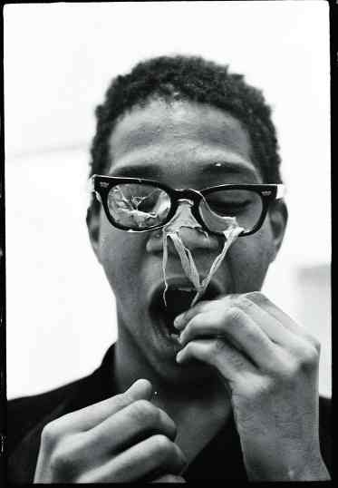
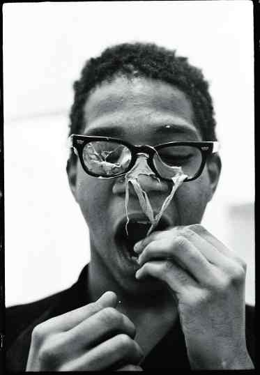

dnn edge detection
nowadays, it has networks for anything ;)

this also needs implementing a custom, Crop layer (taken from the python sample).
here's the model and the prototxt for it.

this also needs implementing a custom, Crop layer (taken from the python sample).
here's the model and the prototxt for it.